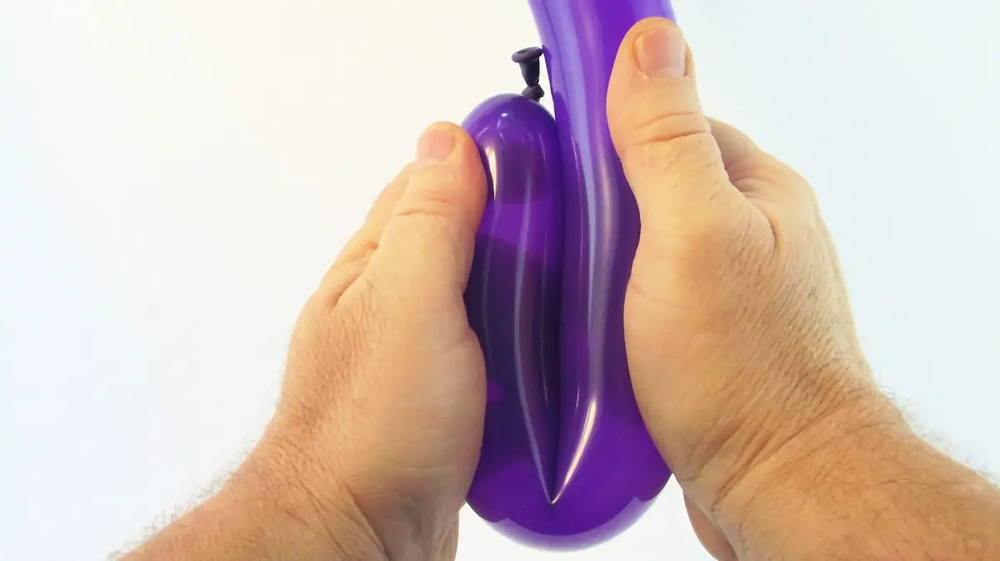
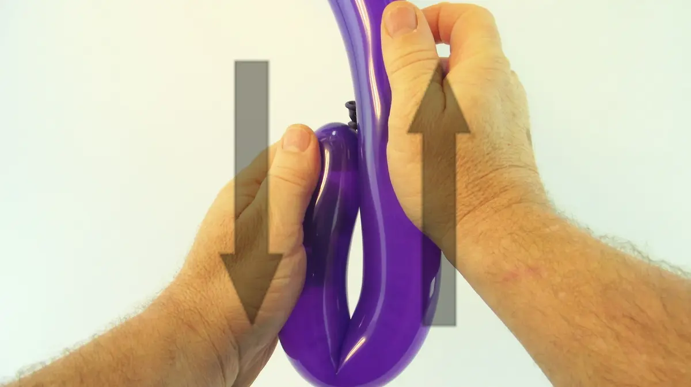
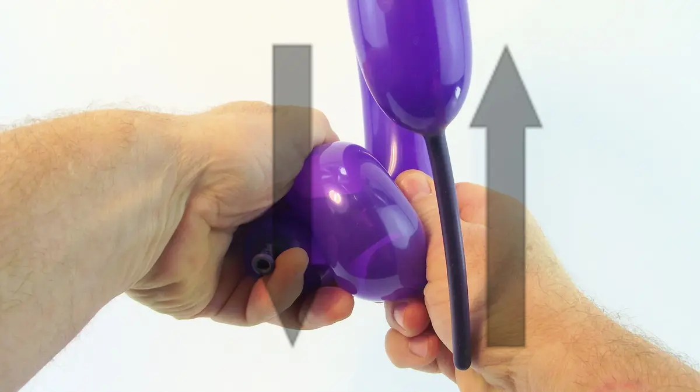
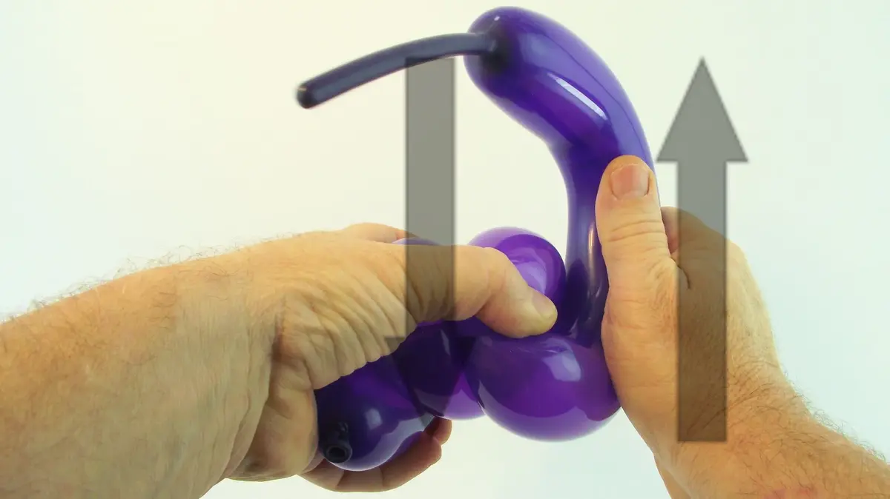
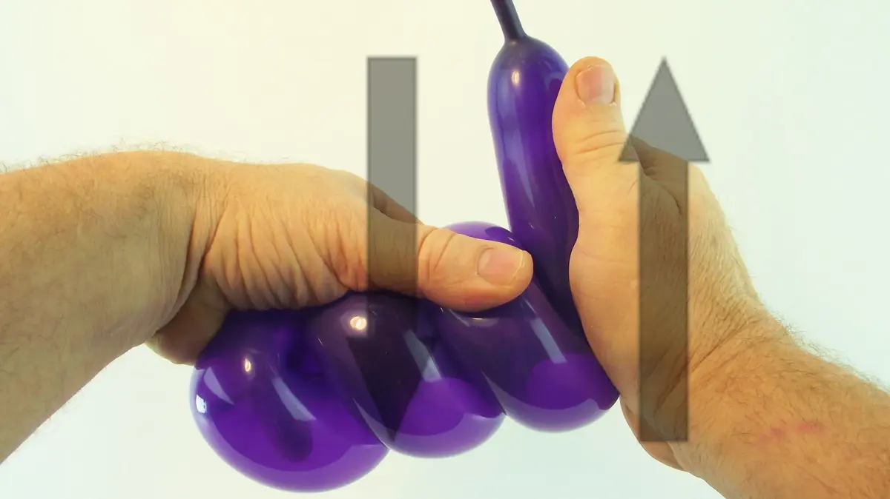

Now let's see how to give a curved shape to a segment of balloon.
It is an important skill to have because it enables you to refine the smaller details of your balloon models, which will make them more realistic and more natural.
For example, this will enable you to mimic the rounded shape of a belly on a little dog, a teddy bear, or a penguin; the curve of a flower's stem, or of a sword's blade, etc.
To go further, we will also see how to very simply make a spiral (there are other ways to do this but we will talk about them later as they are a bit more complex).
Spiral-shaped balloons can be used to form the body of a snake, or even the suspension spring on a motor vehicle!

1- Take a balloon in both hands and bend it, near the knot.2- Rub both segments against each other to move the crease downwards,

3- then upwards, several times.4- Keep going back and forth, all the while guiding the balloon, and therefore the crease where the friction is taking place, forward between your hands 5- Little by little the balloon knot will move away from your support hand6- The idea is to make the whole inflated portion of balloon go through this movement of friction made by your hands,7- until the deflated tail end of the balloon reaches your twisting hand.8- With this method, you can get an almost perfect circle.

9- To get a loop, the operation is almost identical, except that you shouldn't let go of the part of balloon that is passing through this hand movement.

10- You need to keep it compressed in a spiral shape as you gradually work on the whole length of balloon.

11- If it's too difficult to keep the spiral compressed only with your support hand, you can use another part of your body to help yourself (as seen in the video).12- Once the whole length of the balloon is compressed in the shape of a spiral, firmly hold both ends of the spiral in each of your hands,13- and gently pull each end as far apart from the other as you can, then let go just as gently.Once released, the balloon will keep its spiral shape. And see you soon! For another lesson... with Môssieur Ballon!